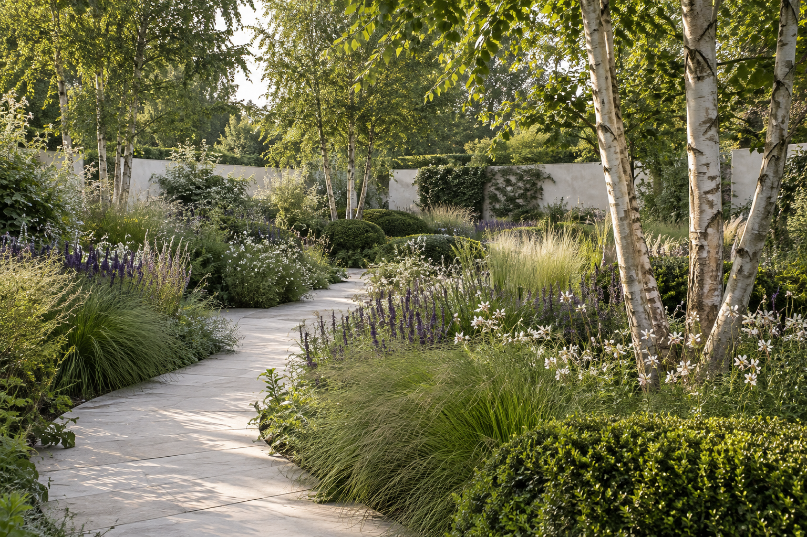
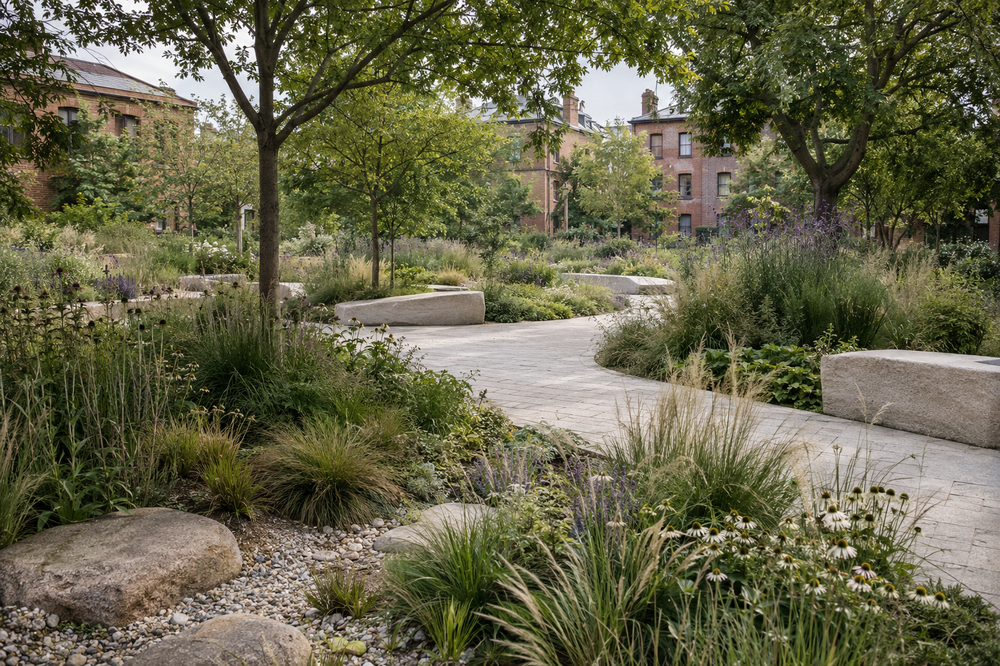

A garden in the city
Room to
breathe.
A quiet courtyard shaped by a winding stone path, a light canopy of birch and planting that changes with the seasons.
- Scope
- Garden & planting design
- Area
- 240 m²
- Project
- Residential concept
Good places grow
from close attention.
We design gardens and public spaces that connect everyday life with the natural world.
Explore our work
A garden in the city
A quiet courtyard shaped by a winding stone path, a light canopy of birch and planting that changes with the seasons.
Less boundary.
More belonging.
Common ground
Mill Yard turns an overlooked urban corner into a shared garden. Generous paths, informal seating and a planted rain garden make room for daily life.

Selected work depicts fictional design concepts, illustrated with original generated photography.
Our approach
Every landscape has its own character. We listen first, observe closely and design for the people who will use it—and the care it will need.
We get to know your brief, your budget and the site: its light, soil, water and existing life.
Plans and material studies bring paths, planting and gathering places into a coherent whole.
Detailed drawings, contractor coordination and a seasonal care plan support the landscape as it settles in.
A new beginning
From a small city garden to a shared public landscape, every project begins with a conversation.
Try the enquiry demo. Nothing is sent or stored.